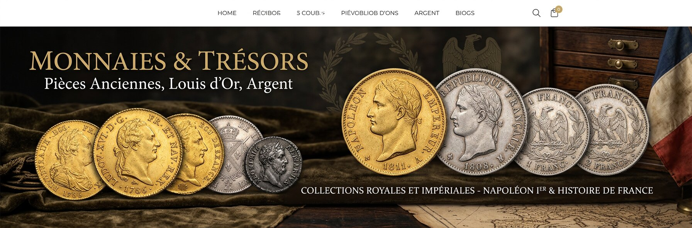

Cinq siècles de notre passé racontés par le métal.
De François Ier (1515) à l’avènement de l’euro (2002).
La passion
Bienvenue sur ce site de numismatique qui a pour vocation de vous faire découvrir les monnaies françaises au travers de notre Histoire de France… de François Ier (1515) à l’avènement de l’euro (2002).
Vous y trouverez principalement des pièces de monnaie, mais aussi quelques billets ou objets afférents à la numismatique… faisant tous partie de ma collection personnelle.
Cette passion m’est venue très jeune. Petit, j’étais fasciné par les pièces. J’ai grandi à une époque où plusieurs nouvelles monnaies sortaient très régulièrement. Puis, année après année, j’ai commencé à remonter le temps.
Aujourd’hui, la numismatique m’a redonné goût à l’histoire de France. Voici donc cinq siècles d’histoire à découvrir par les monnaies…
Mise en ligne récente
La dernière pièce ajoutée à la collection et présentée en détail.
Date : 1577 · Exemplaires : 650 862
Avers : +SIT. NOMEN. DNI. BENEDICT. — Croix échancrée cantonnée de quatre couronnes.
Revers : HENRICVS. III. D: G: FRAN. ET. POL. REX. — Écu de France accosté de deux H.
Références : C.1450 · L.980 · Dy.1140 · Sb.4398
Le parcours
Chaque période de notre histoire a laissé son empreinte dans le métal. Cliquez pour explorer.
Prêt ?
De la Renaissance à l’euro, chaque pièce est une porte ouverte sur une époque. Bon voyage…